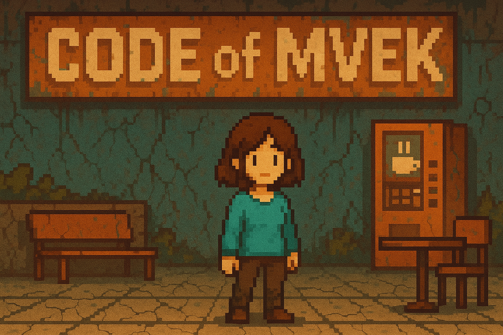
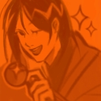

team Brotherhood of lags


?
«Code of MVEK» – это RPG, где вы играйте за студента, способного путешествовать во времени через «Зоны воспоминаний». Вернитесь в прошлое заброшенного колледжа, меняйте события, чтобы восстановить его. Ваши решения определят судьбу колледжа.